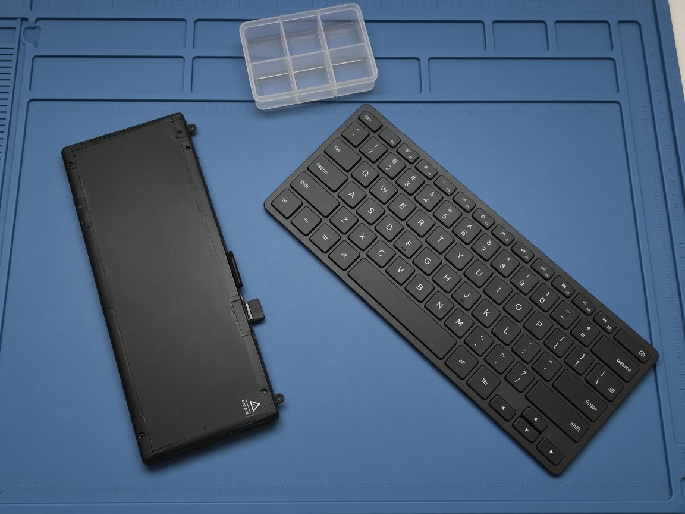
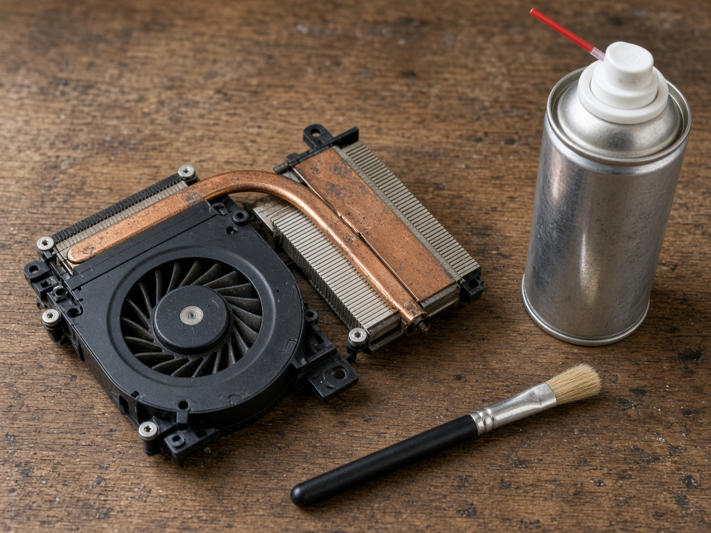
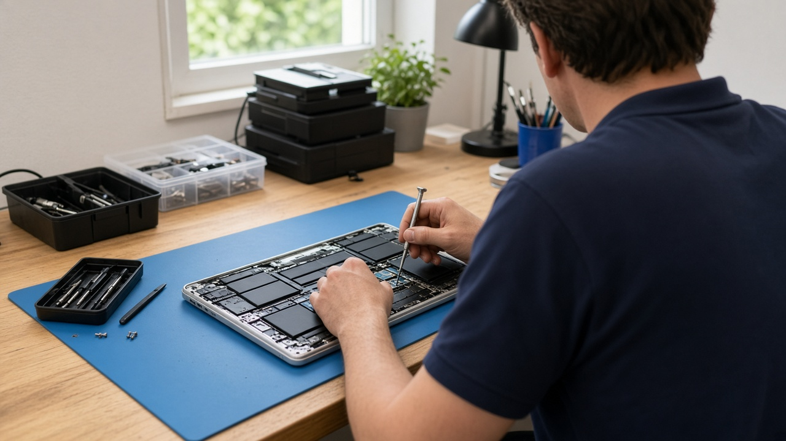
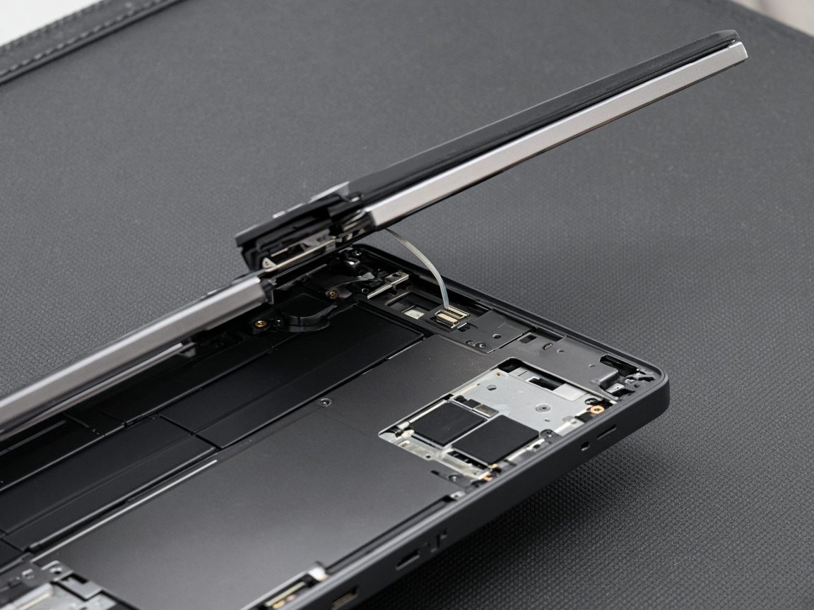

Laptop Repair vs Replacement: Which Is the Best Choice for You?
A failed screen, battery, keyboard, or drive is replaced. Heat and a virus clean stay repairs. The quote comes before paid work.

A failed screen, battery, keyboard, or drive is replaced. Heat and a virus clean stay repairs. The quote comes before paid work.

Cracked screens, weak batteries, dead keys, a slow drive, heat, and a virus clean. The counter quotes before any paid work.
A slow or clicking drive can be replaced with an SSD or a new hard disk. The counter quotes before any paid work.

A walk-in counter at Ganesh Complex. You get a quote before any paid work, and the diagnosis happens in the same shop.

What to bring when a panel is cracked, keys fail, or the battery fades. The counter names the part before the work.
No articles match that search.